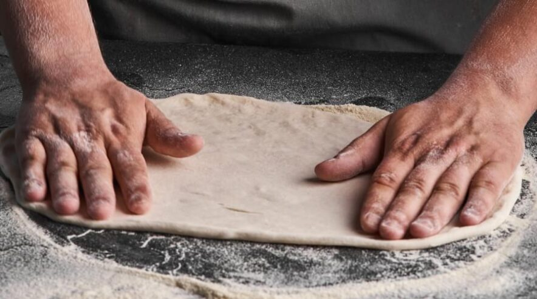

Італійські продукти найвищої якості
МА імпортує продукти топових європейських брендів

Неймовірний смак та хрустка скоринка
МА готує тісто для піци лише на італійському борошні Caputo

Професійні кухарі та піцейоли майстри своєї справи
У МА працюють найкращі! Вболіваємо за розвиток кожного працівника!

Безкоштовна та швидка доставка у будь-який куточок Львова
Середній час доставки у зеленій зоні – 29 хв.
Як у Львові готують справжню італійську піцу
Готувати справжню італійську піцу можуть або італійці, або ті, хто в них навчалися. Серед
нас немає італійців, тож нашим завданням було перейняти досвід у віртуозів цієї справи. Вважаємо, що це
нам вдалося! Щодня ми вдосконалюємося, щоб Ви ще більше закохувалися у кулінарну спадщину Італії.
Оригінальні італійські рецепти, імпортні інгредієнти, трішки фантазії та любов до своєї роботи – наші
основні пріоритети.

Трохи таланту, досвіду та позитиву
Приготування піци – це не рутина, це кулінарна творчість. Наші талановиті піцайоли готують з
любов’ю та позитивом, щоб Ви відчули ці емоції, кусаючи кожен шматочок нашої піци. Далі до справи
беруться кур’єри, для яких будь-які затори не стануть перешкодою на шляху! Кожен у нашій команді працює
якнайкраще, щоб Ви знову і знову куштували справжню італійську піцу від MA Pizza.
Імпортні продукти та піца з українською душею
MA Pizza є одним з лідерів на ринку імпортерів харчових продуктів. Ми самі обираємо бренди, перевіряємо
якість товарів та імпортуємо їх до України. Переглянути увесь асортимент та здійснити покупку Ви можете у
наших маркетах.
Мамма імпортує й інгредієнти для піци, яку готують піцайоли у наших пекарнях. Запевняємо Вас, що усі
продукти, які використовуються для приготування піци – найвищої якості. Наприклад: тунець для «Тонно», хамон
для «Прошуто Крудо» ми веземо з Іспанії; помідори для неаполітанського соусу, борошно для тіста – з Італії;
часто співпрацюємо з польськими та німецькими виробниками продуктів, які чудово смакуватимуть у наших
стравах.
Ми збирали рецепти в Італії, навчалися у майстрів з Неаполя, щоб готувати для Вас справжню піцу у неаполітанському стилі.
На жаль, ми ще не доставляємо замовлення дронами, але у львівському трафіку наші кур’єри почуваються комфортно і доставляють піцу вчасно.
Buon Apettito, наші найдорожчі гурмани!